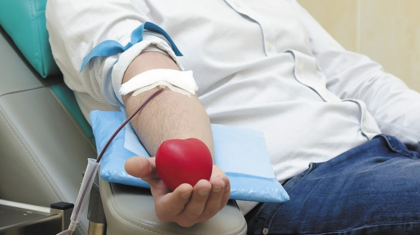

A doação de sangue é um ato altruísta e totalmente voluntário, que pode salvar vidas. Dependem desse ato solidário pessoas que se submetem a tratamentos planejados e intervenções médicas urgentes de grande porte e complexidade, como transfusões, transplantes e procedimentos oncológicos.
O sangue é imprescindível também para que pacientes com doenças crônicas graves como Doença Falciforme e Talassemia possam viver por mais tempo e com mais qualidade, além de ser de vital importância para tratar feridos em situações de emergência ou calamidades.
O sangue é insubstituível e sem ele é impossível viver. Dessa forma, o Ministério da Saúde reforça periodicamente a importância de os brasileiros adotarem a cultura solidária da doação regular e espontânea de sangue. O objetivo é manter os estoques sempre abastecidos e não apenas em datas específicas ou quando algum conhecido precisar. Agora que você entende a importância deste ato de solidariedade, saiba tudo sobre doação de sangue.
Para doar sangue, basta procurar as unidades de coleta de sangue, como os Hemocentros, também checar se você atende aos requisitos necessários para a doação, pois existem doação, pois existem impedimentos temporários e impedimentos definitivos. No Mais, basta estar imbuído pelo desejo de ajudar o próximo.
Homens: De 2 em 2 meses, sendo, no máximo, 4 vezes ao ano
Mulheres: De 3 em 3 meses, sendo, no máximo, 3 doações anuais.
O procedimento para doação de sangue é simples, rápido e totalmente seguro. Não há riscos para o doador, porque nenhum material usado na coleta do sangue é reutilizado, o que elimina qualquer possibilidade de contaminação. É preciso: -Estar em boas condições de saúde; -Ter entre 16 e 69 anos. -Pesar, no mínimo, 50 kg. -Estar descansado (ter dormido pelo menos 6 horas nas últimas 24 horas). -Estar alimentado (mas evitar alimentação gordurosa). -Levar documento original com foto recente.
á situações temporárias e impeditivas para a doação de sangue. Seguem as principais causas de inaptidão: – Resfriado: aguardar 7 dias desde o desaparecimento dos sintomas. – Gravidez: aguardar 90 dias para parto normal e 180 dias para cesariana. – Amamentação: até 12 meses após o parto. Tatuagem ou piercing realizado nos últimos 12 meses. – Transfusão de sangue: aguardar 1 ano. – Ingestão de bebida alcoólica nas 12 horas que antecedem a doação. – Procedimento endoscópico (endoscopia, colonoscopia, rinoscopia): aguardar 6 meses desde o exame. – Extração dentária ou tratamento de canal: aguardar 7 dias desde a realização do procedimento. -Cirurgia odontológica com anestesia geral: aguardar 4 semanas. -Exposição a situações de risco acrescido para infecções sexualmente transmissíveis: aguardar 12 meses desde a exposição. -Apendicite, hérnia, amigdalectomia, varizes: aguardar 3 meses desde o desaparecimento dos sintomas. -Vacina contra a gripe: aguardar 48 horas. -Herpes: aguardar o desaparecimento das lesões para herpes labial ou genital ou aguardar 6 meses desde a cura para herpes zoster.
Os doadores de sangue podem procurar os postos de coleta mais próximos, como os Hemose que fica na rua quinze, s/n – Capucho em Aracaju. Telefone 79 3225-8000, email ouvidoria@fsph.se.gov.br.